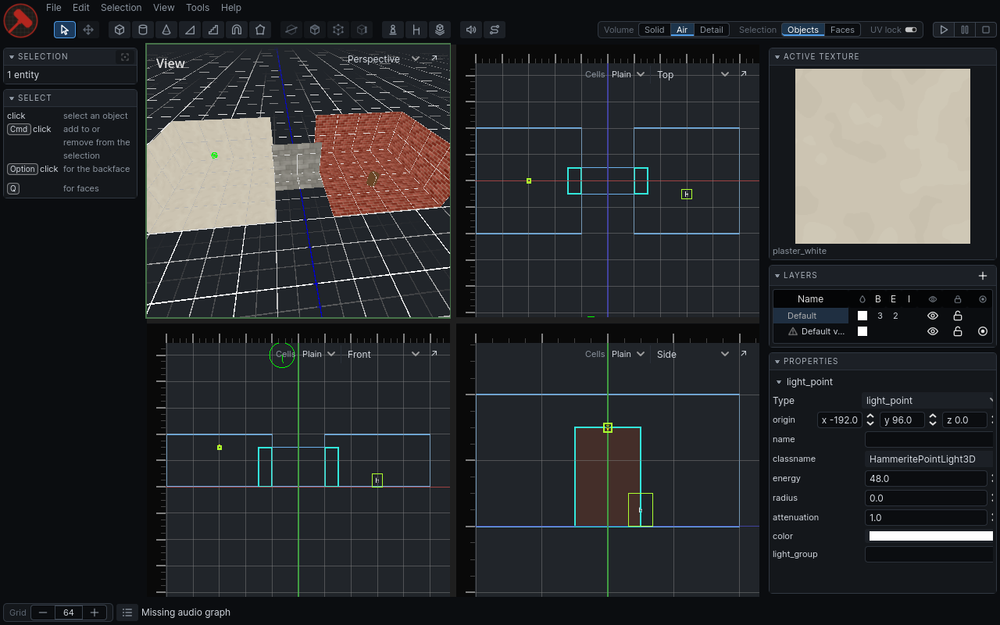
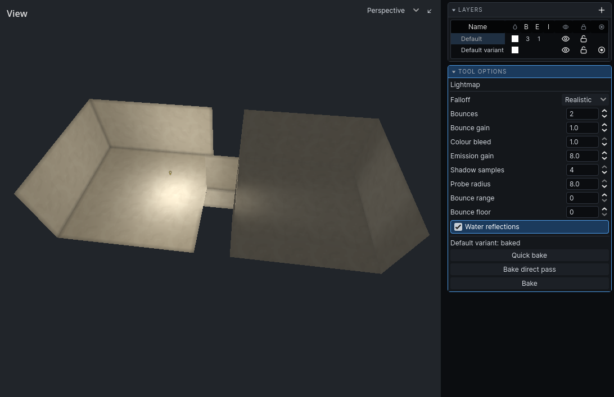
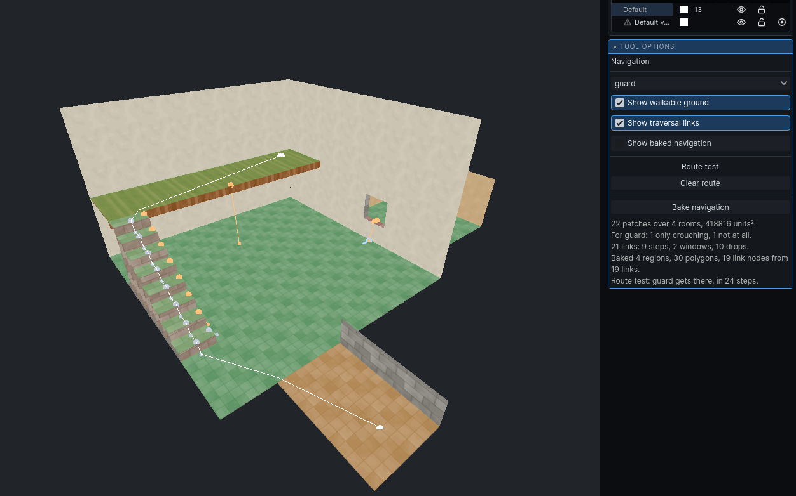
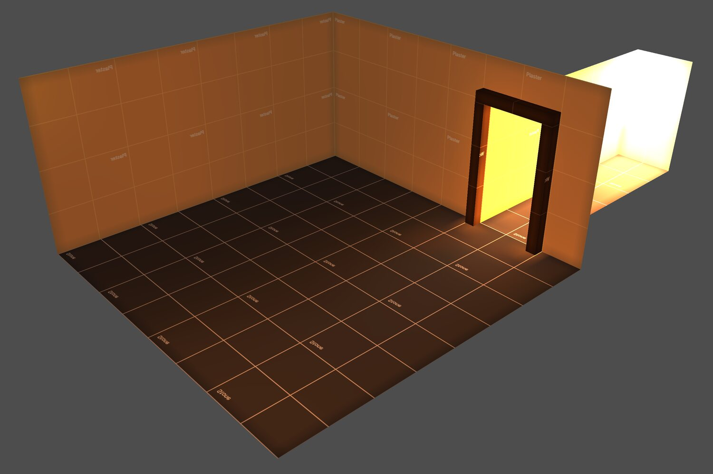
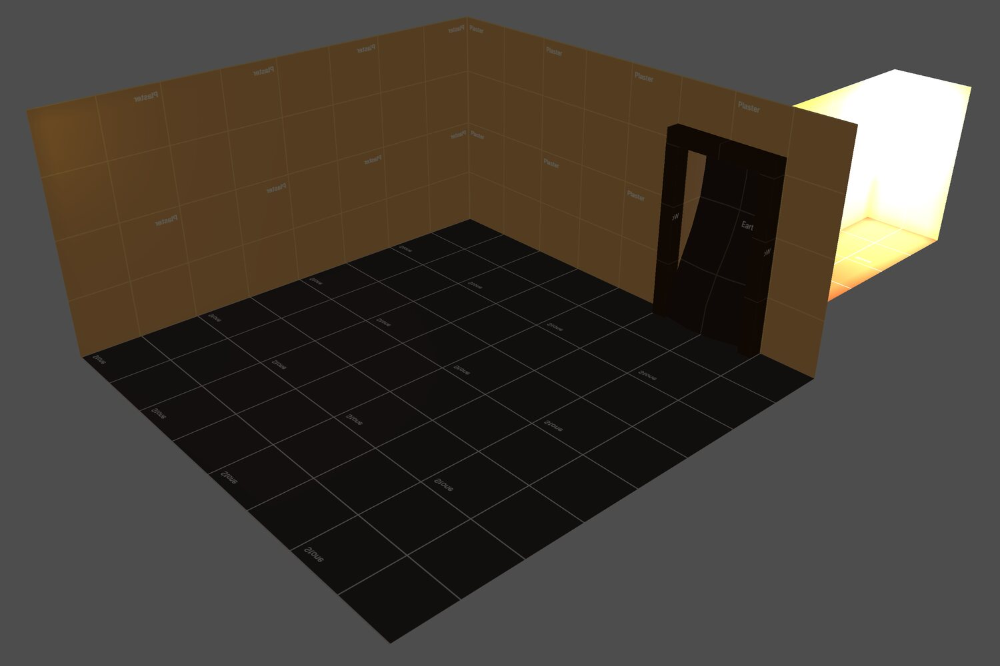

Brush-based level editor for Godot, with a radiosity lightmapper and sound propagation
through the rooms you carve. There is no edit-save-run loop: you edit and test in the same
running game.
Sold on itch.io · Version 2.0 · Godot 4.7 · macOS, Windows and Linux
One licence per individual or company, perpetual and royalty-free. Buying means accepting the licence.

Lightning fast feedback loop
Hammerite runs inside your game itself, so the level you are editing is the level you are
playing. You do not need to save, export or reload anything before trying a change.
The usual loop
Edit the level
Save it
Run the game
Walk back to the spot
Test
Quit, and start over
With Hammerite
Edit the level
Test
Carve a doorway and walk through it. Bake the light and look at it from where you stand.
Close a door and hear the guard beyond it go quiet.
Subtractive workflow
Solid is the default. Air brushes carve rooms out of it, and the compiler works out the rest:
which air is one room, where rooms open into each other, and which walls are visible. Overlap
brushes to extend a space, and abut them to divide one.
Lighting, sound and navigation all use the same compiled world, so a room is lit, heard and
walkable as soon as it is carved. There is more about this in
Hammerite's subtractive workflow and compiler.

Radiosity lighting
A GPU radiosity lightmapper in the spirit of the classic brush-based games. Light bounces,
takes colour from the walls and collects in the corners.
Every surface has up to four dynamic light slots, so lamps can flicker, dim and switch on and off at runtime
without rebaking. For example a flickering torch, a chandelier that goes out all at once, or
lightning flashing in every window. After an edit, a quick bake lights only the walls that
changed.
Sound travels through doorways and windows instead of through walls, so you hear it from the
opening it comes through. A closed door on the way muffles it, and AI hears sounds the same
way.
Reverb comes from each room's size and surfaces. Rain and wind are all around you outdoors, and
indoors you hear them through the nearest windows, muffled by the roof.

Navigation
Walkable ground and traversal links come straight from the carved rooms, as Godot
navigation meshes. Steps, windows, drops, jumps and swimming are found from the level, and a
ladder or a rope is one entity.
Your game defines its agent types: how tall a guard is, how high they climb, how far they
drop and whether they swim. Each type gets its own navigation, so a rat can go where a guard
cannot.
The Navigation tool shows the ground for one agent at a time: green where it walks, amber
where it has to crouch and red where it cannot go. Click two points to test a route, and the
tool draws the path that agent takes.


DefaultCollapsed
Level variants
One map can hold several versions of the same level: the same streets by day and by night,
or a corridor before and after it collapses. A variant can change the level a little, like a
few lanterns, or a lot, like rooms that open up or cave in.
Each variant has its own bake, its own sky and its own audio graph. When the game switches
to another variant, the level changes and its baked lighting and sound come with it.
Shipping the editor
The editor comes with its own manual under Help. Games made with Hammerite may ship it, so
players can make maps too, royalty-free.
Four addons, one native library
Each is a standalone Godot addon, and nothing in them depends on a particular game. All four are
C++, built into one GDExtension library, so there is no GDScript of Hammerite's to compile when
your game starts. The docs have the guides and the full
API reference.
Addon
What it does
Package
hammerite-core
Data model, subtractive compiler, runtime scene, radiosity lightmapper
runtime, full
hammerite-audio
Sound propagation through the rooms, weather, reverb and AI hearing
runtime, full
hammerite-nav
Walkable ground, traversal links and Godot navigation meshes
runtime, full
hammerite-editor
The in-game level editor
full
Two packages: full has everything, and runtime leaves
out the editor, for a game whose players never open it. The library is built for macOS (Apple
silicon and Intel), Windows and Linux on x86-64. There is no web export.
Native code is what keeps the edit-test loop quick on a big level. In 2.0, 256
rooms compile in 303 ms instead of 626, a one-brush edit recompiles in 25 ms instead of 42, and a
large stealth level's navigation builds in 2.8 s instead of 5.7.
Licence
Hammerite is commercial software. One licence covers one buyer, an individual or a company,
including its employees and contractors working on its games. The licence is perpetual.
You may
Use and modify Hammerite to make your own games.
Ship it in your games and sell them, royalty-free.
Let your players make maps and mods with the editor inside your game. They do not need a licence of their own.
You may not
Share, resell or sublicense Hammerite, except as part of your game.
Offer it to other developers as a tool, template, framework or asset, paid or free.
Give players the editor as a standalone tool or addon, separate from your game.
Remove or change the copyright notices in it.
Transfer your licence to someone else without written consent.
Updates may come, but are not promised, and the software is provided as is. The agreement is
under Finnish law. Read the full licence before buying.